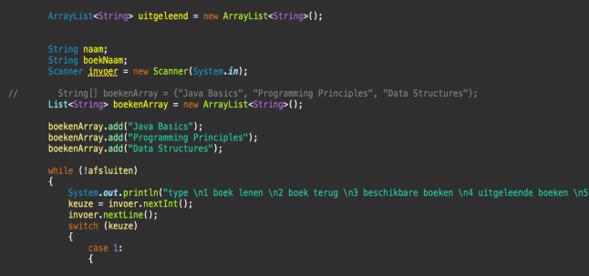
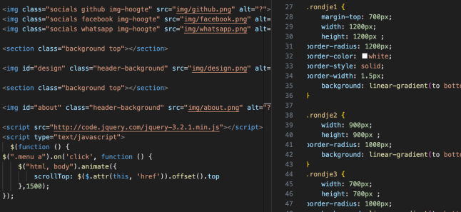
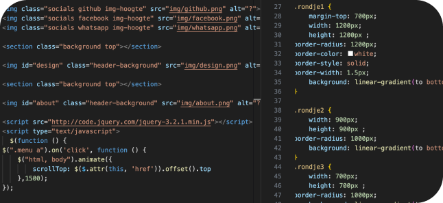
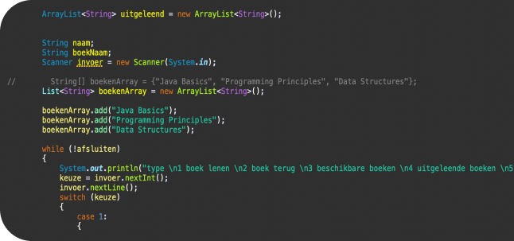
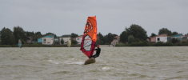

Roc Nijmegen
Roc Nijmegen heeft 5 verschillnde vestigingen. Een daarvan is het Technovium. Dat is een grote techniche school. Met de opleiding software developer. In het eerstje jaar leren we Java, Html en CSS.


Java
In onze basis programmeerlessen verkennen we
Java, een essentiële taal voor variabelen, lussen en condities. Van mobiele apps tot bedrijfssystemen, Java biedt praktische vaardigheden voor directe toepassing.
Html Css
In het vak Website leren we HTML voor structuur, CSS voor stijl, en een vleugje JavaScript voor interactiviteit. Van eenvoudige pagina's tot responsieve ontwerpen, dit vak biedt praktische vaardigheden voor het vormgeven van de digitale wereld.

Website
De eerste web site die ik heb gemaakt was Pinkgoos. Daar heb ik de eerst basis technieken geleerd. Als tweede opdracht hebben we De portfolio website gamaakt waar u nu naar kijkt. hier heb ik nog meer geleedr over flex grid en java script.
class="div2"> 
Code.org
Op de lage school was ik al geintereseerd. daar heb ik de basis geleerd op Code.org. daar heb ik tijdens Corona veel mee gespeeld.
Lego Mindstorms
Tijdens Corona kreeg ik Lego Mindstorms. Door de Corona was het heel belangrijk dat je je handen vaak desinfecteerd. Ik had toen bedacht om iets te maken en progameren met de Lego Mindstorms.

onderwerp
welkom om mijn portfolio, ik ben een web designer en programmeur. ik ben bezig met een opleiding om webdesign om programmeer te worden.
Wout Schiks
Mijn naam is Wout. Ik ben 16 jaar en kom uit Maas en Waal.
Hobby's
Mijn hobby's zijn voetballen en programmeren. Een potje gamen met de vrienden dit er ook wel in. Ook vind ik het heel leuk om te windsurfen en skiën.
ksahgdfj
welkom om mijn portfolio, ik ben een web designer en programmeur. ik ben bezig met een opleiding om webdesign om programmeer te worden.
ksahgdfj
welkom om mijn portfolio, ik ben een web designer en programmeur. ik ben bezig met een opleiding om webdesign om programmeer te worden.
Hey! Ik ben Wout
Welkom om mijn portfolio, een enthousiast 1e jaars Software Developer student op het ROC Nijmegen. Die op zoek is naar een stage plaats waar ik mij verder kan ontwikkelen. Mijn interesse ligt bij het designen en bouwen van websites.
